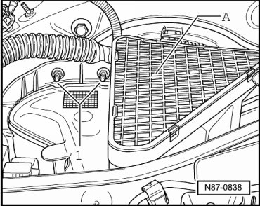
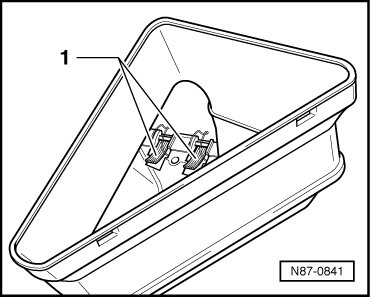
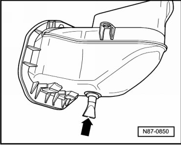

Air Duct: Service and Repair
Intake Housing
Removing
- Remove the plenum chamber cover "Flush Bonded Windows".
- Remove Engine Control Module (ECM).
- Loosen ECM bracket to reach nuts - 1 -.

- Remove nuts - 1 - and remove cover grille - A - from air intake shroud.
- Reach into intake housing from above and loosen retaining clamps - 1 -.

- Remove intake housing from plenum chamber.
Installing
Installation is carried out in the reverse order, when doing this note the following:
- Check for possible contamination on water drain valve - arrow - before installation. Clean water drain valve if necessary.
